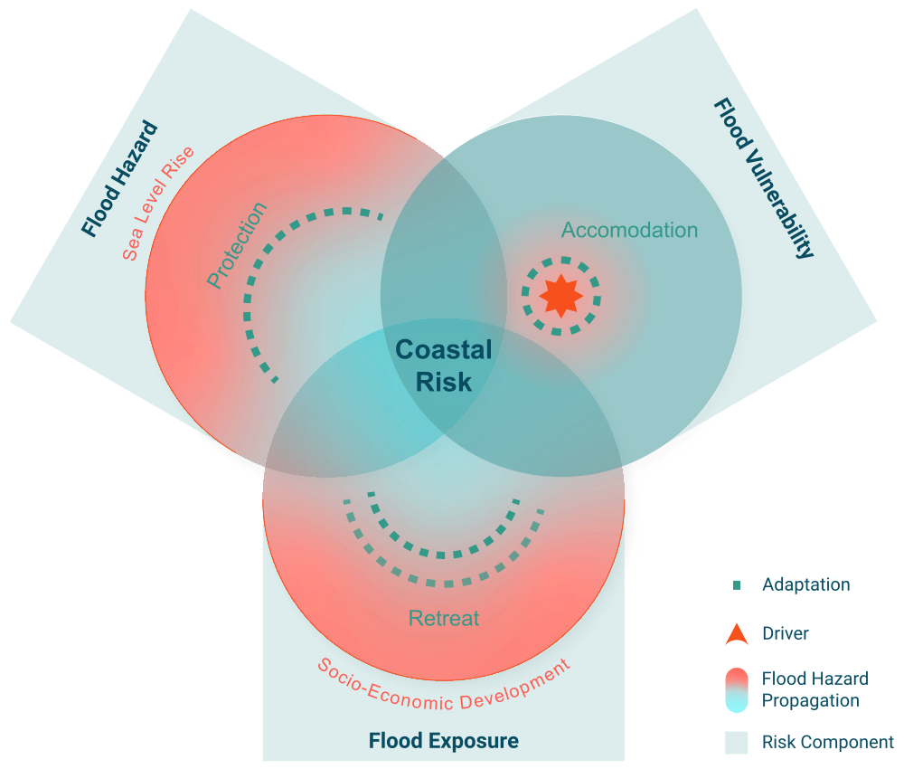

About
DIVACoast.jl is a Julia library for coastal impact and adaptation modelling. The library provides data types and algorithms to quickly script assessments for different coastal impact and adaptation research questions. DIVACoast.jl is provided by the Global Climate Forum via GitHub.
Getting started
Ensure you have Julia installed on your system. You can download Julia from the official julia website. DIVACoast is currently under Development you can install the latest (unstable) version from GitHub.
using Pkg
Pkg.add(url = "https://github.com/globalclimateforum/DIVACoast.jl")
using DIVACoastConcept

The key concept of DIVACoast.jl is the concept of risk. Following the definition of the Intergovernmental Panel on Climate Change (IPCC), risk constituted by the three components of hazard, exposure and vulnerability (Oppenheimer et al., 2019; Wong et al., 2014). While on the long run the package is meant to serve multiple coastal risks including the risk of flooding, erosion, salinity intrusion and wetland change, the current release concentrates on flood risk.
Flood risk
Coastal flood risk assessment involves at least the following five components (Figure x):
- Sea-level hazard, including mean sea-levels (MSL) and extreme sea-levels (ESL) from tides, surges, waves, river run-off and their interactions;
- Hazard propagation, which refers to the transformation of the sea-level hazard to the flood hazard. This includes the propagation of mean and extreme sea-level onto the shore and the floodplain, including their interaction with natural (e.g., dunes) and artificial (e.g., dikes) defences;
- Flood hazard, refers to the flood characteristics found at a specific flooded location. Currently
DIVACoast.jlis limited to the characteristic of maximum water depth. - Flood exposure in terms of area, people and coastal assets potentially threatened by these hazards; and
- Flood vulnerability, which refers to the propensity of the exposure to be adversely affected by the flood hazard (IPCC, 2014b).
Drivers
- Sea-level rise: changes the hazard
- Socio-economic development: changes exposure and vulnerability
Adaptation
- protection: affects the hazard propagation
- retreat: reduces exposure
- accommodate: reduces vulnerability
Sea-level hazards
Currently the only way to represent sea-level hazards in DIVACoast.jl is through extreme still water level distributions. These distributions are represented as Distributions of the Julia Package Distributions.jl. As ESL are often provided as non-parametric (i.e. empirical) distributions, i.e. point-wise as a list of water levels and associated return periods, DIVACoast.jl provides a couple of functions that convert these non-parametric distributions to a chosen parametric extreme value distribution.
Main.DIVACoast.estimate_gumbel_distribution — FunctionThis function tries to fit a gumbel distribution to given data. wldata is the actual data (e.g. water level). cdfdata are the empirical cdf values for the data in x (i.e. values between 0 and 1 - to be interpreted as quantiles). The funtion returns a GeneralizedExtremeValue (GEV) with the third (shape, ξ) parameter being zero. If the cdf fit fails for any reason, the standard gumbel distribution (μ=mean(data), σ=var(data), ξ=0.0) is returned
Main.DIVACoast.estimate_frechet_distribution — FunctionThis function fits a Frechet Distribution to the inserted data. y should be the return period and x the corresponding water level height. The funtion returns a GeneralizedExtremeValue (GEV).
This function tries to fit a Frechet distribution to given data. x is the actual data (e.g. water level). y are the empirical cdf values for the data in x (i.e. values between 0 and 1 - to be interpreted as quantiles). The funtion returns a GeneralizedExtremeValue (GEV) with the third (shape, ξ) parameter being bigger than zero. If the cdf fit fails for any reason, a standard Frechet distribution (μ=mean(data), σ=var(data), ξ=0.5) is returned
Main.DIVACoast.estimate_gev_distribution — FunctionThis function fits an extreme value distribution to the inserted data. y should be the return period and x the corresponding water level height. The funtion returns a GeneralizedExtremeValue (GEV) and uses the best fit out of the Gumbel, Frechet and Weibull model based on the summed squared residuals.
Main.DIVACoast.estimate_weibull_distribution — FunctionThis function fits a Weibull Distribution to the inserted data. y should be the return period and x the corresponding water level height. The funtion returns a GeneralizedExtremeValue (GEV).
This function tries to fit a Weibull distribution to given data.
x is the actual data (e.g. water level).
y are the cempirical df values for the data in x (i.e. values between 0 and 1 - to be interpreted as quantiles).
The funtion returns a GeneralizedExtremeValue (GEV) with the third (shape, ξ) parameter being smaller than zero. If the cdf fit fails for any reason,
a standard Weibull distribution (μ=mean(data), σ=var(data), ξ=-0.5) is returnedMain.DIVACoast.estimate_gpd_negative_distribution — FunctionThis function fits a Generalized Pareto Distribution with negative shape to the inserted data. y should be the return period and x the corresponding water level height. The funtion returns a GeneralizedPareto (GPD).
Main.DIVACoast.estimate_gpd_positive_distribution — FunctionThis function fits a gpd_positive Distribution to the inserted data. y should be the return period and x the corresponding water level height. The funtion returns a GeneralizedExtremeValue (GEV).
Main.DIVACoast.estimate_gp_distribution — FunctionThis function fits an extreme value distribution to the inserted data. y should be the return period and x the corresponding water level height. The funtion returns a GeneralizedPareto (GPD) and uses the best fit out of the exponential, positive GPD and negative GPD model based on the summed squared residuals.
Main.DIVACoast.estimate_exponential_distribution — FunctionThis function tries to fit an exponential distribution to given data. x is the actual data (i.e. water level). y are the cdf values for the data in x (i.e. values between 0 and 1). The funtion returns a GeneralizedPareto (GPD) with the third shape parameter being zero. If the cdf fit fails for any reason, the standard exponential distribution (μ=0) is returned
Main.DIVACoast.plot_comparison_extreme_distributions — Functionplot_comparison_extreme_distributions(x_data::Array{T}, y_data::Array{T})This function creates a plot that compares six different extreme distribution fits to underlying data. The input is an xdata and ydata array, xdata is the absolute height of extremes and ydata is the annual probability to be below this value. The function fits three different GEV and three different GPD functions to the data and plots all of these. It also highlights the best fit out of these six functions and highlights this in the plot.
Exposure
Currently the main way to represent exposure in DIVACoast.jl is as HypsometricProfile. This is a special kind of coastal profile that allows for a very efficient computation of flood damages, which is beneficial for running large number of damage assessments as, e.g., required for many economic questions that involve optimization. In addition, DIVACoast.jl supports representing exposure via two dimensional grids, in which each grid cell is mapped to its elevation (or hydrological connectivity), as well as a set of exposure variables such as area, people or assets. DIVACoast.jl represents such gridded exposure as SparseGeoArrays. Functions are also provided to convert gridded exposure data to hypsometric profiles.
Hypsometric Profiles
 A hypsometric profile represents a cross-section of the coastal zone as a function that maps elevation to the cumulative exposure below this elevation. Hyposmetric profiles are derived from a Digital Elevation Model (DEM) considering hydrological connectivity. <!– add the math –>
A hypsometric profile represents a cross-section of the coastal zone as a function that maps elevation to the cumulative exposure below this elevation. Hyposmetric profiles are derived from a Digital Elevation Model (DEM) considering hydrological connectivity. <!– add the math –>
A HyposmetricProfile holds two different types of exposure:
- Static Exposure, which is exposure that cannot be relocated. An example is land (area).
- Dynamic Exposure, which is exposure that can be relocated or adapted over time. Examples are people, who may move to higher elevations, or assets depreciating as mean and extreme sea-levels come closer over time.
Constructing Hypsometric Profiles
Currently, Hypsometric Profiles can constructed directly through a constructor, or indirectly from a NetCDF file.
<!–- rename "load" to "read" –>
Main.DIVACoast.HypsometricProfile — TypeHypsometricProfile(coast_length::DT, coast_length_unit::String,
elevations::Array{DT}, elevation_unit::String, area::Array{DT}, area_unit::String,
exposure_data::StructArray{T1}, exposure_units::Array{String}) where {DT<:Real,T1}A HypsometricProfile represents the variation in elevation from the coastline to inland areas. It can be constructed manually or by using load_hsps_nc() and a NetCDF-file.
Main.DIVACoast.load_hsps_nc — Functionload_hsps_nc(::Type{IT}, ::Type{DT}, filename::String)::Dict{IT,HypsometricProfile{DT}} where {IT<:Integer,DT<:Real}Load a netcdf file into hypsometric profiles. IT is the indextype (an integer type which is used to adress a specific profile), DT is the datatype (a floating point type which is used to store the data internally). Hypsometric profiles are not compressed.
Examples
julia> test = load_hsps_nc(Int32, Float32, "test.nc")
Dict{Int32, HypsometricProfile{Float32}} with 2716 entries:
2108 => HypsometricProfile{Float32}(1.0, Float32[-5.0, -4.9, -4.8, -4.7, -4.6, -4.5, -4.4, -4.3, -4.2, -4.1 … 19.1, 19.2, 19.3, 19.4, 19.5, 19.6, 19.7, 19.8, 19.9, 20.0], Float32[0.0, 0.0, 0.0, 0.0, …Main.DIVACoast.to_hypsometric_profile — Functionfunction to_hypsometric_profile(sga::SparseGeoArray{DT,IT}, width::DT2, min_elevation::DT2, max_elevation::DT2, elevation_incr::DT2)::HypsometricProfile where {DT<:Real,IT<:Integer,DT2<:Real}Function converts a SparseGeoArray object to a HypsometricProfile object. The function calculates the area of each elevation increment and stores it in the HypsometricProfile object. Elevation increments are calculated between a min_elevation and a max_elevation with a desired eleveation increment: elevation_incr. The function returns the HypsometricProfile object.
Arguments
sga::SparseGeoArray{DT,IT}: TheSparseGeoArrayobject to be converted.width::DT2: The width of the hypsometric profile.min_elevation::DT2: The minimum elevation of the hypsometric profile to be considered.max_elevation::DT2: The maximum elevation of the hypsometric profile to be considered.elevation_incr::DT2: Desired elevation increment.
Returns
HypsometricProfile: The hypsometric profile object.
Example
to_hypsometric_profile(sga, 1.0, -2.0, 20.0, 5.0)function to_hypsometric_profile(sga_elevation::SparseGeoArray{DT,IT}, area_unit::String, sgas_exp::Array{SparseGeoArray{DT,IT}}, exp_names::Array{String}, exp_units::Array{String}, width::DT2, width_unit::String, min_elevation::DT2, max_elevation::DT2, elevation_incr::DT2, elevation_unit::String)Creates a HypsometricProfile object from a SparseGeoArray object containing elevation data. It also calculates associated area affected and static/dynamic exposure at each elevation increment. The function returns the HypsometricProfile object.
Arguments
sga_elevation::SparseGeoArray{DT,IT}: TheSparseGeoArrayobject containing elevation data.area_unit::String: The unit of the area.sgas_exp::Array{SparseGeoArray{DT,IT}}: TheSparseGeoArrayobjects containing dynamic exposure data.exp_names::Array{String}: The names of the dynamic exposure data.exp_units::Array{String}: The units of the dynamic exposure data.width::DT2: The width of the hypsometric profile.width_unit::String: The unit of the width.min_elevation::DT2: The minimum elevation of the hypsometric profile to be considered.max_elevation::DT2: The maximum elevation of the hypsometric profile to be considered.elevation_incr::DT2: Desired elevation increment.elevation_unit::String: The unit of the elevation.
Returns
HypsometricProfile: The hypsometric profile object.
Example
to_hypsometric_profile(sga_elevation, "m²", sgas_exp, ["population", "assets"], ["individuals", "USD"], 1.0, "m", -2.0, 20.0, 5.0, "m")Base.:+ — Function function Base.:+(hspf1::HypsometricProfile{Float32}, hspf2::HypsometricProfile{Float32})Addtion of two Hypsometric Profiles. Adds (combines) the folling properties of the HypsometricProfiles:
Arguments
- Elevation: Combine Increments
- width: Adds the width of both HypsometricProfiles
- cummulativeArea: Adds the cummulative are of both HypsometricProfiles
- static Exposure: Adds the cummulative static exposure of both HypsometricProfiles
- dynamic Exposure: Adds the dynamic exposure of both HypsometricProfiles
Main.DIVACoast.unit — Functionunit(hspf::HypsometricProfile, s::Symbol)
unit(hspf::HypsometricProfile, s::String)
returns the unit (of type String) of the exposure variable with name s (where s can be a string or a symbol)Main.DIVACoast.compress! — Functioncompress!(hspf::HypsometricProfile)Comress a hypsometric profile by removing colinear points. Calculations on compressed hypsometric profiles can be faster. Idempotent operation.
Querying Hypsometric Profiles
Main.DIVACoast.exposure — Functionexposure(hspf::HypsometricProfile{DT}, wl::Real, im::IM) where {DT<:Real, IM<:InundationModel}Calculate the cumulative area, static exposure, and dynamic exposure below elevation (e) for a hypsometric profile. The function handles different cases based on the elevation's presence in the profile and its position.
Arguments
hspf::HypsometricProfile{DT}: The hypsometric profile with elevation, area and exposure data. e::Real: The elevation threshold for which exposure is calculated (everything underneath this elevation). im::IM: the inundationmodel used to .
Returns
Exposed area and exposure for elevations smaller than e.
Modifying Hypsometric Profiles
Socio-economic development and adaptation changes exposure. For example, socio-economic growth increases the number of people and their assets in the coastal zone, while retreat reduces assets and people in the costal zone. To represent those process in DIVACoast, we provide the following functions.
Main.DIVACoast.multiply_exposure! — Functionfunction multiplyexposure!(hspf::HypsometricProfile{DT}, factors::Array{T}) where {DT<:Real,T<:Real} function multiplyexposure!(hspf::HypsometricProfile{DT}, factor::T, s::Symbol) where {DT<:Real,T<:Real} function multiply_exposure!(hspf::HypsometricProfile{DT}, factor::T, s::String)
The multiply_exposure! function applies factors to all exposure data of a HypsometricProfile, where different factors for different variables are possible. This can be used to implement soci-economic growth. Versions for single varaibles exist.
Arguments
hspf::HypsometricProfile: the hypsometric profile to modify- factors: an array of factors, one for each variable of the profile
- factor: one factor for a specific exposure variable
- s: The name of the exposure variable to modify (apply the factor to)
Example
function multiply_exposure!(hspf, [1.0, 1.1])
function multiply_exposure!(hspf, 1.0, :assets)
function multiply_exposure!(hspf, 1.1, "population")Main.DIVACoast.multiply_exposure_above! — Functionfunction multiplyexposureabove!(hspf::HypsometricProfile{DT}, above::Real, factors::Array{T}) where {DT<:Real,T<:Real} function multiplyexposureabove!(hspf::HypsometricProfile{DT}, above::Real, factor::T, s::Symbol) where {DT<:Real,T<:Real} function multiplyexposureabove!(hspf::HypsometricProfile{DT}, above::Real, factor::T, s::String)
The multiply_exposure! function applies factors to all exposure data above a given elevation of a HypsometricProfile, where different factors for different variables are possible. Versions for single varaibles exist.
Arguments
hspf::HypsometricProfile: the hypsometric profile to modify- above: the elvation, only exposure above this elevation is affected
- factors: an array of factors, one for each variable of the profile
- factor: one factor for a specific exposure variable
- s: The name of the exposure variable to modify (apply the factor to)
Example
function multiply_exposure_above!(hspf, [1.0, 1.1])
function multiply_exposure_above!(hspf, 1.0, :assets)
function multiply_exposure_above!(hspf, 1.1, "population")Main.DIVACoast.multiply_exposure_below! — FunctionApplies socio-economic development (factor) below a certain elevation.
Main.DIVACoast.remove_exposure_below! — FunctionRemoves expoexposure_growth assets / population below a certain elevation.
Main.DIVACoast.add_exposure_between! — FunctionAdds assets / population between certain elevations.
Main.DIVACoast.add_exposure_variable! — Functionfunction add_exposure_variable!(hspf::HypsometricProfile, elevation::Array{DT},
exposure_data::Array{DT}, exposure_name::String, exposure_units::String)
where {DT<:Real}The add_exposure_variable! function adds a complete exposure variable to a HypsometricProfile. Exposure values to add are provided using the exposure_data parameter. Corresponding elevation increments need to be provided using the elevation parameter. The exposure_name and exposure_units parameters are used to name the exposure and provide units for the exposure values. The function harmonizes the elevation increments within the HypsometricProfile and the provided elevation increments. The function also compresses the HypsometricProfile
Arguments
hspf::HypsometricProfile: the hypsometric profile object to which the exposure data will be added.elevation::Array{DT}: the elevation increments that thehspf.elevationwill be resampled to.exposure_data::Array{DT}: the exposure values to be added to the profile.exposure_name::String: the name to be associated with the exposure data.exposure_units::String: the units of the exposure data.
Example
add_exposure_variable!(hspf, [0.0, 1.0, 2.0, 3.0], [0.0, 3000, 5000, 2000], "population", "individuals")Main.DIVACoast.remove_exposure_variable! — Functionfunction remove_exposure_variable!(hspf::HypsometricProfile, ind :: Integer)
function remove_exposure_variable!(hspf::HypsometricProfile, s: Symbol)
function remove_exposure_variable!(hspf::HypsometricProfile, s: String)Function removes a complete exposure variable from a HypsometricProfile at the index ind, or with name :s or s. The function removes the exposure data, the exposure name and the exposure units from the HypsometricProfile.
Arguments
hspf::HypsometricProfile: The hypsometric profile object from which the exposure data will be removed.ind::Integer: The index of the exposure data to be removed.ind::Integer: The index of the exposure data to be removed.ind::Integer: The index of the exposure data to be removed.
Examples
remove_exposure_variable!(hspf, 1)
remove_exposure_variable!(hspf, :population)Main.DIVACoast.add_exposure_above! — FunctionAdds assets / population above a certain elevation.
Two-dimensional gridded exposure
Currently, DIVACoast.jl only provides limited support for representing coastal exposure on a two-dimensional (2D) grid, but this will be added in future releases. In the current release, the main purpose of representing two-dimensional exposure data is to convert these to hypsometric profiles.
SparseGeoArray (SGA)
In DIVACoast.jl 2D gridded exposure is represented as SparseGeoArray (SGA).
Main.DIVACoast.SparseGeoArray — TypeSparseGeoArray{DT,IT}(filename::String, band::Integer=1) where {DT <: Real, IT <: Integer}A SparseGeoArray combines spatial data with geospatial information for referencing. The data itself is stored in a efficient (sparse) format, so only the non-empty grid cells are stored. The geospatial information is stored in a CoordinateTransformations.AffineMap object, which is used to transform between pixel coordinates and geospatial coordinates.
The SparseGeoArray is a mutable struct that contains the following attributes:
data: a dictionary that stores the data values for each pixel in the grid. The keys are tuples of pixel coordinates (x,y), and the values are the data values.nodatavalue: a value that represents missing or invalid data in the grid. This value is used to identify empty cells in the grid.f: aCoordinateTransformations.AffineMapobject that defines the transformation between pixel coordinates and geospatial coordinates.crs: aGeoFormatTypes.WellKnownTextobject that defines the coordinate reference system (CRS) for the data. This is used to interpret the geospatial coordinates correctly.metadata: a dictionary that stores additional metadata about the data, such as the source of the data or the date it was collected.xsize: the number of pixels in the x-direction (width) of the grid.ysize: the number of pixels in the y-direction (height) of the grid.projref: a string that represents the projection reference for the data.filename: a string that represents the filename of the data file.
Spatial Operations on SparseGeoArray
A number of standard functions are provided for handling gridded exposure data.
<!– Can we group the documentation of these functions into meaningful subheading –>
Base.getindex — Functiongetindex(sga::SparseGeoArray, i::AbstractRange, j::AbstractRange, k::Union{Colon,AbstractRange,Integer})Index a SparseGeoArray with AbstractRanges to get a cropped SparseGeoArray with the correct AffineMap set.
Examples
julia> sga[2:3,2:3]
2x2x1 Array{Float64, 3} with AffineMap([1.0 0.0; 0.0 1.0], [1.0, 1.0]) and undefined CRSMain.DIVACoast.coords — Functioncoords(sga::SparseGeoArray, p::SVector{2,<:Integer}, strategy::AbstractStrategy=Center())
coords(sga::SparseGeoArray, p::Tuple{<:Integer,<:Integer}, strategy::AbstractStrategy=Center())
coords(sga::SparseGeoArray, p::CartesianIndex{2}, strategy::AbstractStrategy=Center())Retrieve coordinates of the cell index by p. See indices for the inverse function.
Main.DIVACoast.indices — Functionindices(sga::SparseGeoArray, p::SVector{2,<:Real})Retrieve logical indices of the cell represented by coordinates p. See coords for the inverse function.
Main.DIVACoast.nh4 — Functionnh4(sga :: SparseGeoArray{DT, IT}, x :: Integer, y :: Integer) :: Array{Tuple{IT,IT}}
nh4(sga :: SparseGeoArray{DT, IT}, p :: Tuple{Integer,Integer}) :: Array{Tuple{IT,IT}}Compute the 4-Neighbourhood of the grid cell x,y in the SparseGeoArray sga and return as Array of pairs. Takes into account the boundaries of the SparseGeoArray.
Examples
julia> nh4(sga, 1, 1)
2-element Vector{Tuple{Int32, Int32}}:
(2, 1)
(1, 2)
julia> nh4(sga, 2, 4)
4-element Vector{Tuple{Int32, Int32}}:
(1, 4)
(3, 4)
(2, 3)
(2, 5)
Main.DIVACoast.nh8 — Functionsame as nh4 but accounting for al 8 neighbours of a pixel with index (x,y)
Main.DIVACoast.distance — Functiondistance(lon1 :: R, lat1 :: R, lon2 :: R, lat2 :: R) :: R where {R <: Real}
distance(p1 :: SVector{2,R}, p2 :: SVector{2,R}) :: R where {R <: Real}
distance(p1 :: AbstractVector{R}, p2 :: AbstractVector{R}) :: R where {R <: Real}
distance(p1 :: Tuple{R,R}, p2 :: Tuple{R,R}) where {R <: Real} :: R where {R <: Real}Compute the distance (in km) between two points given by lon1,lat1 and lon2,lat2 resp. p1 and p2. Uses the Haversine formula.
Examples
julia> ...
distance(hspf::HypsometricProfile, e::Real)
Compute the distance of elevation e (given in m) from the coastline in hspf. disatnce is returned in km.
Main.DIVACoast.go_direction — Functiongo_direction(lon :: R, lat :: R, distance :: Real, direction :: AbstractDirection) :: Tuple{R,R} where {R <: Real}Compute the geographical coordinates of the point reached if we go distance km from (lon,lat) in direction. Takes into account circularity, but does not cross poles. direction can be East(), North(), West(), South()
Examples
julia> go_direction(13.2240, 52.3057, 10, East())
(13.370916039175427, 52.3057)
julia> go_direction(13.2240, 52.3057, 10000, North())
(13.224, 90.0)
julia> go_direction(19.0045,0.0,40075,West())
(19.004500000000007, 0.0)Main.DIVACoast.bounding_boxes — Functionbounding_boxes(sga :: SparseGeoArray{DT, IT}, lon_east :: Real, lon_west :: Real, lat_south :: Real, lat_north :: Real) where {DT <: Real, IT <: Integer}Compute the bounding box(es) for the sparse geoarray sga and an area from loneast to lonwest and latsouth and latnorth.
Examples
julia> ...
Main.DIVACoast.area — FunctionMain.DIVACoast.emptySGAfromSGA — FunctionemptySGAfromSGA(orgSGA::SparseGeoArray{DT,IT}, extentNew)
Creates an empty SparseGeoArray from an existing SGA (orgSGA) with same projection / specifications.
Main.DIVACoast.get_extent — FunctionGet the extent of an SparseGeoArray.
Main.DIVACoast.sga_union — Functionsga_union(sgaArray::Array{SparseGeoArray{DT,IT}}) Get the union of multiple SparseGeoArrays.
Main.DIVACoast.sga_intersect — FunctionGet the intersetct of multiple SparseGeoArrays.
Main.DIVACoast.sga_diff — FunctionGet the difference of multiple SparseGeoArrays.
Main.DIVACoast.sga_summarize_within — FunctionSummarize data within a certain radius around a point p using a summarize function.
Main.DIVACoast.minumum_mean — FunctionFunction to get the mean of all minimum values according to sortlist in valuelist
Main.DIVACoast.get_closest_value — FunctionGet the closest value to a point p. Should be used for small datasets only
Main.DIVACoast.get_box_around — FunctionCrop a SGA to an extent defined by a radius around a point p.
Main.DIVACoast.epsg2wkt — FunctionGet the WKT of an Integer EPSG code
Main.DIVACoast.proj2wkt — FunctionGet the WKT (WellKnownText) of an Proj string
Main.DIVACoast.str2wkt — FunctionParse CRS string into WKT.
Main.DIVACoast.epsg! — FunctionSet CRS on SparseGeoArray by epsgcode
Main.DIVACoast.is_rotated — FunctionCheck wether the AffineMap of a GeoArray contains rotations.
Main.DIVACoast.bbox! — FunctionSet geotransform of SparseGeoArray by specifying a bounding box. Note that this only can result in a non-rotated or skewed GeoArray.
Main.DIVACoast.geotiff_connect — FunctionThis function connect two geotiffs by a given operation. infilename1::String infilename2::String outfilename::String f::Function
Spatial relationship
Main.DIVACoast.Neighbour — TypeThe Neighbours structure holds and BallTree Object and the created Matrix.
Main.DIVACoast.nearest — FunctionThe nearest function returns the index of nearest neighbour of an Neighbours Object to an coordinate.
Parameter
- n: The Neighbours Object to search trough.
- coordinate: A coordinate the nearest neighbour relates to.
The nearest function returns the nearest neighbour of an Neighbours Object to multiple coordinates. Coordinates can be passed to the fucntion as a DataFrame.
Parameter
- n: The Neighbours Object to search trough.
- df: DataFrame holding the coordinates, the nearest neighbour should relate to.
- dtype: DataType the coordinates will be parsed in.
- lonlatCols: Columns names (string / symbol) of the columns in the input
dataframe holding the coordinates.
- dropna: Whether na's should be kept or not.
Main.DIVACoast.nearest_coord — FunctionDoes same as nearest() but returns Coordinate of nearest neighbour.
Main.DIVACoast.coords_to_wide — FunctionThis funciton transforms the longitude and latitude columns of an DataFrame to a Matrix in wide-format required for Nearest Neighbour matching.
Parameter
- df: The input DataFrame containing the longitude and latitude column.
- dtype: The datatype the coordinates should be parsed in.
- lonlatCols: The longitude and latitude columns (default = (:lon, :lat))
Return
- returns created matrix and DataFrame the matrix is based on (omitted NA values).
Flood damage assessment
Flood propagation model
Currently DIVACoast.jl supports the bathtub model and the attenuated bathtub model. Attenuation refers to the reduction of water levels while floods propagate inland across the landscape. The magnitude of attenuation is a function of land cover such as vegetation, buildings and infrastructure which slow down and hence reduce the extent of flooding.
Main.DIVACoast.expected_damage_bathtub_standard_ddf — Functionexpected_damage_bathtub_standard_ddf(LocalCoastalModel::LocalCoastalModel{DT}, hdd_area::DT, hdds_other::Array{DT})This function calculates the annual expected damage for one local coastal model (Hypsometric Profile and Extreme surge distribution) by integrating the product of damages and the pdf (probability disctribution function) of the surge model over all possible extreme values. The output are annual expected damage (as a pair) for area (one number) and for all other exposure dimensions (an array of numbers). The standard depth damage function (dd = 1/(1+hdd)) is used to estimate flood damages, the hdd parameters for ares (one number) and for all other exposure dimensions (an array of numbers) are input parameters
Main.DIVACoast.expected_damage_bathtub — Functionexpected_damage_bathtub(LocalCoastalModel::LocalCoastalModel{DT}, ddf_area::Function, ddf_other::Array{Function})This function calculates the (annual) expected damage for one local coastal model (Hypsometric Profile and Extreme surge distribution) by integrating the product of damages and the pdf (probability disctribution function) of the surge model. The output are annual expected damage for (one number) and for all other exposure dimensions (an array of numbers). The depth damage functions for ares (one function) and for all other exposure dimensions (an array of functions) are input parameters.
Main.DIVACoast.damage_bathtub_standard_ddf — FunctionMain.DIVACoast.damage_bathtub — Functiondamage_bathtub(hspf::HypsometricProfile{DT}, wl::DT, ddf_area::Function, ddfs_other::Vector{Function}) where {DT<:Real}
damage_bathtub(hspf::HypsometricProfile{DT}, wl::DT, ddf_area::Function, ddfs_other::Vector{Any}) where {DT<:Real}
damage_bathtub(hspf::HypsometricProfile{DT}, wl::T, ddf::Function, s::Symbol) where {DT<:Real,T<:Real}Calculates the damage using the bathtub model for a given water level wl based on a provided damage function ddfarea and additional damage functions ddfsother.
Arguments
hspf::HypsometricProfile{DT}: The hypsometric profile.wl::DT: The water level for which the damage is calculated.ddf_area::Function: The damage function for the area.ddfs_other::Vector{Function}: Additional damage functions for other exposures.
Example
damage = damage_bathtub(hspf, 1.5, (x) -> x^2, [(x) -> x, (x) -> x^3])<!– <font color="red">Remark JH: I could also imagine that we provide additional methods for these functions in a way the structure of our library becomes clearer.
For example we could define different types of flood propagation models:
abstract type FloodPropagationModel end
struct Bathtub <: FloodPropagationModel end
struct Attenuated <: FloodPropagationModel
attenuation_rates:: Union{Float,Array{Float}}
end
struct HydroDynamicModel <: FloodPropagationModel
path_to_executable="bla/lisflood"
...
endAnd then have generic methods operating on them
Main.DIVACoast.damage(hspf::HypsometricProfile{DT}, wl::DT, model::FloodPropagationModel)
Then we could calculate damages in the following way
damage(hspf, wl, Bathtub())
damage(hspf, wl, Attenuated(.5))
damage(hspf, wl, Attenuated([.1,.2,.4,.6,.5]))
damage(hspf, wl, HydroDynamicModel())Thoughts? </font> –>
Coastal models
DIVACoast.jl also provides the higher-level data structures of Coastal Models, which provide a range of higher-level convenience functions to handle large ensembles of coastal risk assessment. The data structure of CoastalModel thereby combines hazard, exposure, vulnerabilty information for a given type of hazard. Several Coastal Models can further be combined into a CompositeCoastalModel. Currently, the only type of Coastal Model available is the CoastalFloodModel, which is further described below. Future versions of the library will also contain other types of Coastal Models such as, e.g., CoastalErosionModel and CoastalWetlandsModel.
Coastal Flood Model
A CoastalFloodModel combines all information necessary for computing flood exposure and damage including sea-level hazard, attenuation model, exposure and vulnerability.
<!– Change to CoastalFloodModel –>
Main.DIVACoast.LocalCoastalImpactModel — TypeLocalCoastalImpactModel{DT<:Real, IDT, DATA} <: CoastalImpactUnitA LocalCoastalImpactModel combines a surge model (distribution) and a coastal plain model (HypsometricProfile). It also holds the current protection level.
Main.DIVACoast.ComposedImpactModel — TypeComposedImpactModel{ID_TYPE1,ID_TYPE2,DATA,CIU} <: CoastalImpactUnit where {CIU <: CoastalImpactUnit}A ComposedImpactModel combines multiple LocalCoastalImpactModels into a combined datastructure.
<!– <font color="red">Remark JH: Can we change the above to:</font> –>
Main.DIVACoast.CoastalFloodModel
Main.DIVACoast.ComposedCoastalFloodModelA CoastalFloodModel is defined as
mutable struct CoastalFloodModel{DT<:Real,IDT,DATA} <: CoastalImpactUnit
id::IDT
surge_model::Distribution
coastal_plain_model::HypsometricProfile{DT}
protection_level::Real
data::DATA
end<!– <font color="red">Remark JH: According to the definition of risk above, it would make sense to also include vulnerability in a coastal model, because then we have all three components included in a CoastalFloodModel. Plus we could then write convenience functions such as:</font> –>
<!– ``` function damage(cfm::CoastalFloodModel, x::Real) function expected_damage(cfm::CoastalFloodModel)
# Drivers
DIVA provides convenient data readers for external drivers such as sea-level rise and socio-economic development. These readers provide values for any future point in time by **interpolating** piecewise linearly between time steps and **extrapolating** linearly from the last available time step. All readers also provide growth rates between two points in time. Growth rates can be returned in three different ways as AnnualGrowthPercentage, AnnualGrowth, GrowthFactor.
## 1D deterministic scenarios
**Socio-economic-scenarios** often come as deterministic scenarios and can be handled using the `DeterministicScenarioReader`.
<!-- ```@docs
Main.DIVACoast.ScenarioReader<font color="red">I propose to generalise this data structure and all associated functions to the following</font>
Main.DIVACoast.DeterministicScenarioReader
value(sw::DeterministicScenarioReader, time::Real)
growth_absolute(sw::DeterministicScenarioReader, time_from::Real, time_to::Real)
growth_relative(sw::DeterministicScenarioReader, time_from::Real, time_to::Real)
...
–>
2D probabilistic scenarios
Main.DIVACoast.SSPScenarioReader — TypeWraps SSP Dataset (CSV file).
Main.DIVACoast.SLRScenarioReader — TypeCreates a SLR-Scenario reader around a dataset (NetCDF) using dataset specific variable names for variable (e.g., "SeaLevelRise"), latitude, longitude, time, and quantile After the Wrapper structure was initialized dataset specific functions can be used (e.g, getslrvalue)
Main.DIVACoast.get_slr_value — FunctionGets the Sea Level Rise value at a specific location (lon, lat) in a specific quantile at a specific time.
Main.DIVACoast.get_slr_value_from_grid_cell — FunctionGets the Sea Level Rise value at a specific cell (indexlon, indexlat) in a specific quantile (given by index_qtl) at a specific time. Faster than the previous
Sea Level Rise scenarios often come as 2D probabilistic scenarios, which are handled using the 2DProbScenarioReader. This reader can then be used with the get_value() and get_value_from_cell() functions to retrieve the relevant data. The reader takes a NetCDF file as input, which must include the following dimensions:
- Variable: The specific variable you want to access (e.g., Sea Level Rise in meters).
- Longitude and Latitude: Dimensions specifying the longitude and latitude for each grid cell in the NetCDF file.
- Time: Time dimension, e.g., 5-year increments.
- Quantiles: Quantiles associated with the variable.